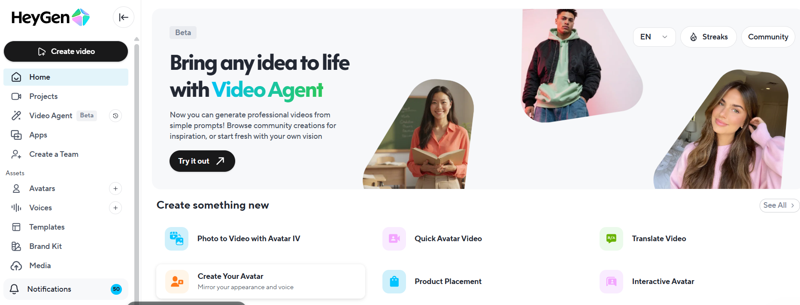
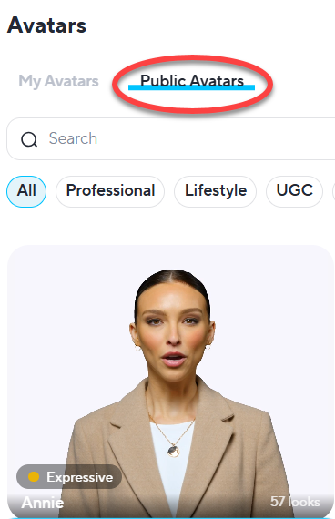
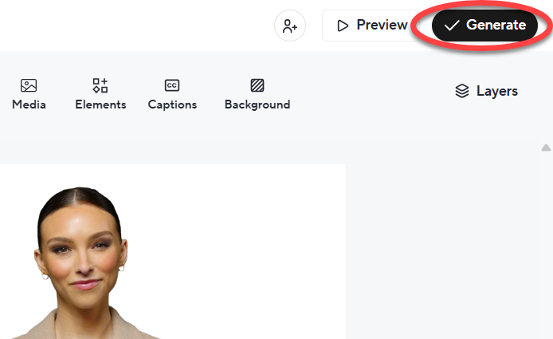

How to Create an Avatar in HeyGen
By Ross Hayduk
Step 1: Open HeyGen
Go to
HeyGen.com
and log in with your account. If you don't have one, sign up for FREE to get started.
Note: Free accounts have limited capabilities.

Step 2: Navigate to Avatar Creation
Once logged in, click the Avatars tab in the main menu. This opens the avatar creation dashboard.
Explore the different avatar categories, from UGC to studio-style characters.

Step 3: Choose Your Avatar Type
You can select a stock avatar or create a custom avatar. Start with Public Avatars.
Custom avatars may require an additional subscription.

Step 4: Customize Your Avatar
Adjust voice, language, and gestures. HeyGen supports lip-sync for scripts. Preview before saving.
Match the voice to the character to avoid the “uncanny valley” effect.

Step 5: Generate
Click Generate to produce your avatar. Use it in HeyGen projects or export it.
Saved: Your avatar is ready for use.

Now, Review the Five Steps
- Open HeyGen.
- Go to Avatars.
- Choose an avatar.
- Customize voice and gestures.
- Click Generate.
Great work! You’re on your way to mastering HeyGen.